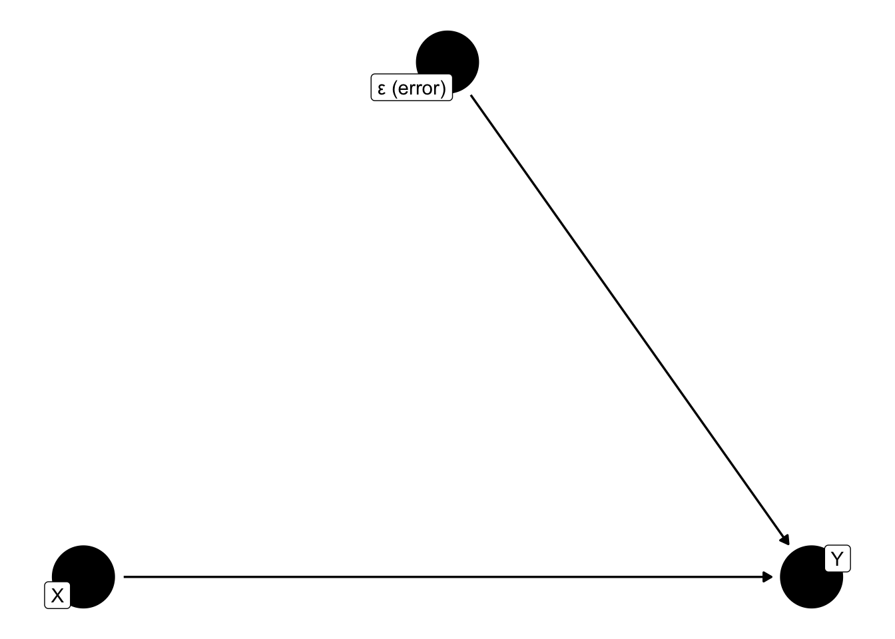
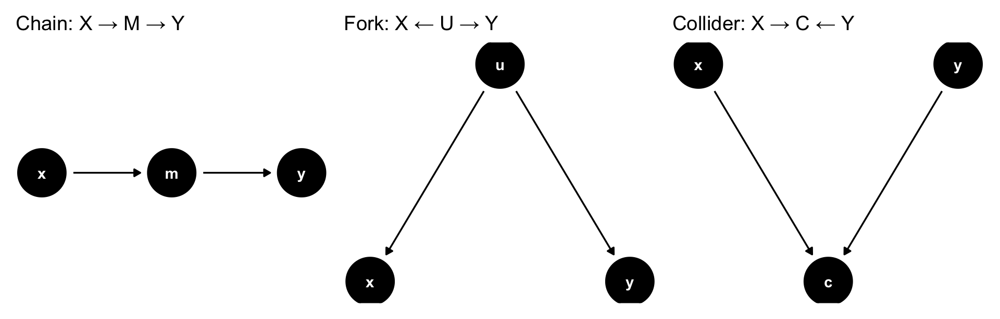
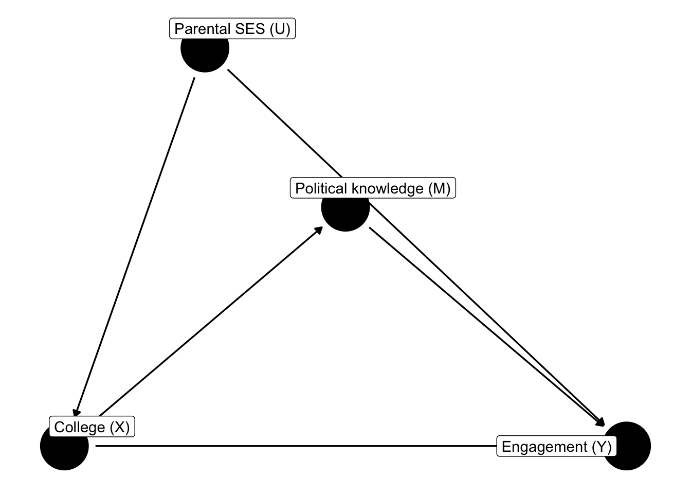
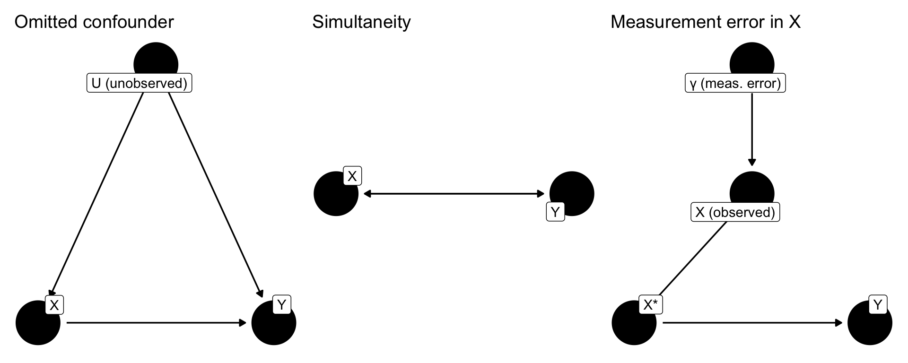
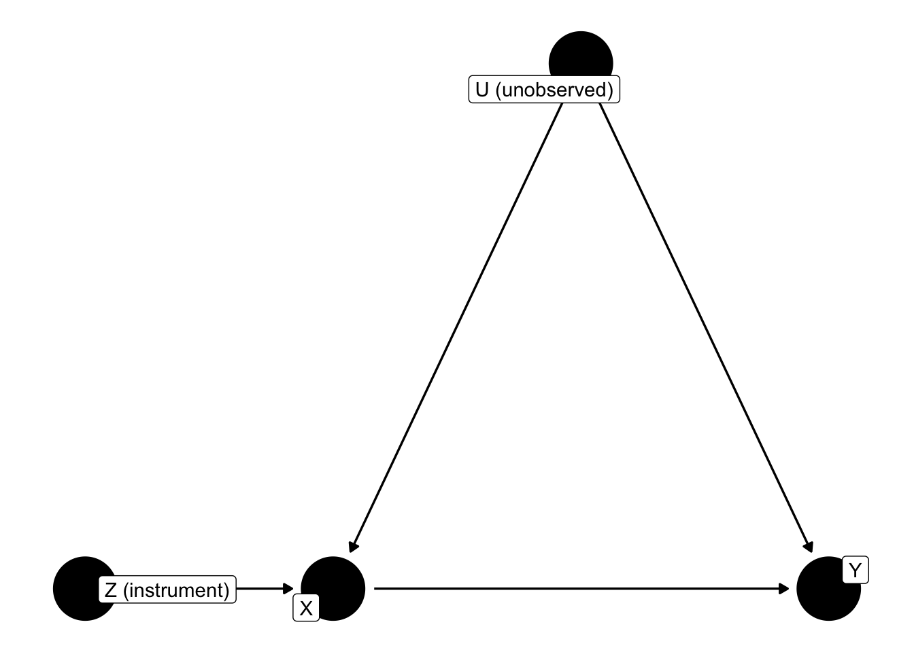
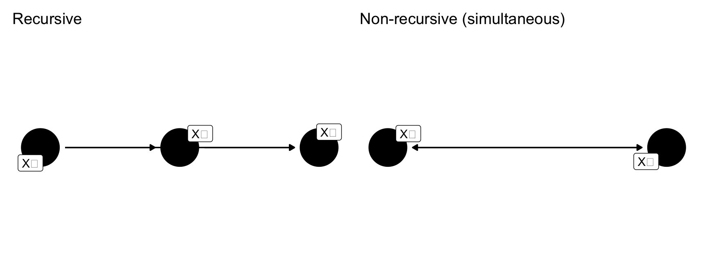
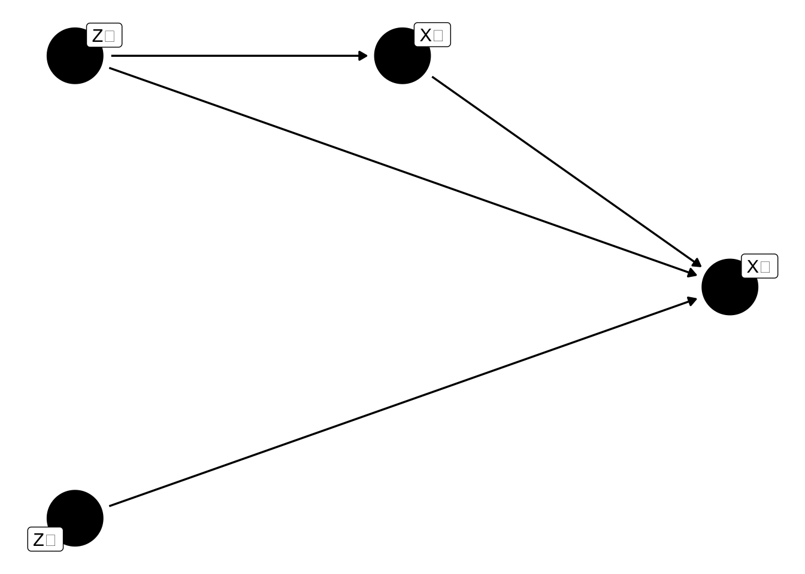
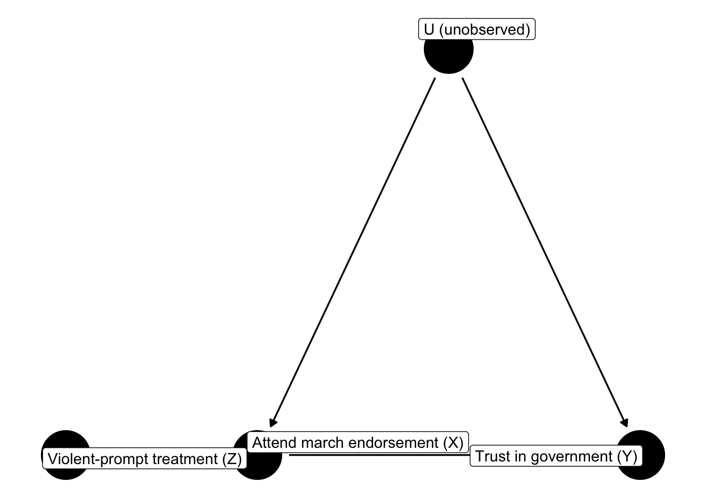

13 The Exogeneity Assumption
13.1 Introduction
Recall that an assumption of the linear model is that the errors are uncorrelated with the independent variables. This can be violated in a number of ways.
The assumption of exogeneity is the assumption that the independent variable(s) are determined outside the model; it is uncorrelated with the error term.
As we’ve seen, several Gaussian assumptions overlap. Exogeneity one of the more encompassing ones. For instance, proper model specification is a necessary condition for exogeneity. If we omit a relevant variable that is correlated with both the independent variable and the dependent variable, that omitted variable gets absorbed into the error term, which creates a correlation between the independent variable and the error term. This produces bias. Violations of this assumption can follow from a number of sources:
- Omitted variables. By omitting relevant variable that is related to both an independent variable and the dependent variable, it gets absorbed into the error term. This creates a non-zero correlation between the right-hand side variable(s) and the errors, which produces bias. Note that this is a problem of omission – if we include the confounder, the bias goes away.
- Measurement error in an independent variable induces a correlation with the error and leads to attenuation bias (see the previous chapter).
- Simultaneity. An independent variable may not be truly exogenous and fixed; instead, it may be influenced by the dependent variable itself.
Each of these is a violation of what we call exogeneity.
13.2 Introducing the DAG
A Directed Acyclic Graph (DAG) is just a sketch of purportedly causal relationships. Nodes are variables; arrows are causal effects. “Acyclic” means no variable causes itself (even indirectly). DAGs let us see what OLS is doing – and why it sometimes fails – without working through the algebra.
13.2.1 Exogeneity
An exogenous is a variable that is determined outside the model; outside the set of variables in our statistical model. In a DAG, that means it has no arrow pointing into it from anything else in the system. It might have arrows pointing from it, but nothing in our model causes it.
The DAG captures the assumption we need for OLS to be unbiased: \(X\) and \(\epsilon\) are unconnected. Values of \(X\) are predetermined – not caused by anything else in the equation, and crucially not caused by \(Y\).
13.3 Reading a DAG
Before we use DAGs to diagnose endogeneity (and related things), we need to develop the vocabulary for reading these diagrams.
These rules come from Judea Pearl’s work on causal graphs, and the gist is always the same: for OLS to recover a causal effect, the covariates in our model must block every non-causal path between the treatment and the outcome, without blocking any of the causal paths.
13.3.1 Paths
A path is any sequence of arrows (in either direction) connecting two variables. Some paths are causal, some are not:
- A causal (directed) path follows arrows in one direction: \(X \to M \to Y\).
- A non-causal (backdoor) path has at least one arrow pointing against the direction you’re reading: \(X \leftarrow U \to Y\).
Both kinds of paths transmit statistical association. Only the first is what we mean by a “causal effect.” The whole game is separating them.
13.3.2 Three Intersections: Pipes, Chains and Colliders
Every path is built from three kinds of relationships:
- Chain (a “pipe”): \(X \to M \to Y\). Association flows through \(M\). Conditioning on \(M\) blocks it.
- Fork (confounder): \(X \leftarrow U \to Y\). Association flows through \(U\). Conditioning on \(U\) blocks it.
- Collider: \(X \to C \leftarrow Y\). Association does not flow through \(C\) in the graph. But conditioning on \(C\) opens the path.

13.3.3 d-Separation and the Backdoor Criterion
A path is blocked by a conditioning variable(s) \(\mathbf{Z}\) if \(\mathbf{Z}\) is the middle variable in a chain or fork, and \(\mathbf{Z}\)is not a collider. A path is also blocked if the descendants are in \(\mathbf{Z}\) Two variables are d-separated by \(\mathbf{Z}\) if every path between them is blocked.
The backdoor criterion translates this into a means for identifying the causal effect of \(X\) on \(Y\):
Choose a set \(\mathbf{Z}\) of covariates such that (a) \(\mathbf{Z}\) blocks every backdoor path from \(X\) to \(Y\), and (b) \(\mathbf{Z}\) contains no descendants of \(X\).
If such a \(\mathbf{Z}\) exists, regressing \(Y\) on \(X\) and \(\mathbf{Z}\) recovers the causal effect of \(X\) on \(Y\).
13.3.4 A Quick Example
Suppose we want the causal effect of college (\(X\)) on voter engagement (\(Y\)). Two other variables may play a role:
- Parental SES (\(U\)): affects both whether you go to college and whether you vote.
- Political knowledge (\(M\)): college increases knowledge, and knowledge increases engagement.

List the paths from \(X\) to \(Y\):
- \(X \to Y\) — causal (direct).
- \(X \to M \to Y\) — causal (indirect, through the mediator).
- \(X \leftarrow U \to Y\) — backdoor (non-causal; this is what biases OLS if we ignore \(U\)).
Apply the backdoor criterion. We want the total effect of \(X\) on \(Y\), so we need to block path 3 without touching paths 1 or 2.
- Condition on \(U\)? Yes. \(U\) is the middle of a fork on path 3; including it as a regressor blocks that backdoor path. And \(U\) is not a descendant of \(X\), so it’s allowed.
- Condition on \(M\)? No. \(M\) is the middle of a chain on path 2 — the causal indirect effect. Including it would close the mediator and we’d recover only the direct effect, not the total effect.
So the valid adjustment set is \(\mathbf{Z} = \{U\}\). The OLS regression lm(Y ~ X + U) recovers the total causal effect. lm(Y ~ X + U + M) recovers only the direct effect. lm(Y ~ X) alone is biased by the \(X \leftarrow U \to Y\) confounding path.
We can confirm with dagitty package:
g_ex <- dagitty::dagitty("dag {
U -> X
U -> Y
X -> M
M -> Y
X -> Y
}")
dagitty::adjustmentSets(g_ex, exposure = "X", outcome = "Y"){ U }Now imagine \(U\) is unobserved — a common situation. The backdoor path \(X \leftarrow U \to Y\) cannot be blocked by conditioning, because we don’t have \(U\) in our data. No valid adjustment set exists. That is exactly the situation in which instrumental variables enter the picture.
13.3.5 Three Rules for Specification
From the backdoor criterion, three operational rules fall out:
- Block every backdoor path. Control for confounders (forks).
- Do not condition on a collider. Including one in your regression creates a spurious association between the parents of that collider.
- Do not condition on a post-treatment variable (a mediator) if you want the total effect. Chains carry part of the causal signal; closing them throws that signal away.
The dagitty package automates this: given a DAG and a (treatment, outcome) pair, adjustmentSets() returns every valid \(\mathbf{Z}\).
g <- dagitty::dagitty("dag {
U [unobserved]
Z -> X
X -> Y
U -> X
U -> Y
}")
dagitty::adjustmentSets(g, exposure = "X", outcome = "Y")No valid backdoor adjustment exists here because \(U\) is unobserved. That is precisely the situation in which we mow turn: endogeneity and instrumental variables.
13.4 Endogeneity in a DAG
An endogenous variable is determined by factors inside the model. The dependent variable is endogenous by definition. The problem arises when one of our independent variables is endogenous in a way that links it to the error.

In all three cases, a backdoor path connects \(X\) to something that sits inside the error term. OLS can’t tell that path apart from the causal effect of \(X\) on \(Y\), and the coefficient is biased.
13.5 Instruments, Pictorially
An instrumental variable \(Z\) is an exogenous variable that is specifically useful for recovering the causal effect of an endogenous \(X\) on \(Y\). A valid instrument satisfies two properties, both easiest to see in a picture:

The two conditions:
- Relevance. \(Z\) has an arrow into \(X\). \(Z\) actually moves \(X\) around.
- Exclusion. \(Z\) has no direct arrow to \(Y\) and no arrow to or from the confounder \(U\). The only path from \(Z\) to \(Y\) goes through \(X\).
Two-stage least squares (2SLS) uses \(Z\) to isolate the part of \(X\) that is driven by the instrument – the “clean” variation – and uses that to estimate the effect on \(Y\).
13.6 Terminology, More Formally
An endogenous variable is determined inside the model. In the equation
\[ y_i = b_0 + b_1 x_i + e_i, \]
\(y\) is endogenous. Exogeneity of \(x\) asserts that \(x\)’s values are predetermined outside the system (and, critically, not caused by \(y\)).
An instrumental variable \(z\) is exogenous and affects a right-hand side endogenous variable but is excluded from the outcome equation:
\[ y_i = b_0 + b_1 x_i + e_{1i}, \qquad x_i = a_0 + a_1 z_i + e_{2i}. \]
If we regress \(x\) on \(z\), take the fitted values \(\hat{x}\), and plug them into the \(y\) equation, we have two-stage least squares. Substituting the first stage into the second gives the reduced-form equation for \(y\) in terms of the exogenous variables only.
13.7 Systems of Equations
So far we have talked about one equation at a time. But endogeneity is almost always a statement about a system of equations – once we admit that \(Y\) might cause \(X\), or that an unobserved \(U\) causes both, we have more than one dependent variable floating around.
Consider two variables that move together:
\[ x_2 = b_{00} + b_{01} x_1 + e_1, \]
\[ x_1 = b_{10} + b_{11} x_2 + e_2. \]
Both variables appear on the left-hand side of an equation and on the right-hand side of another. Both are endogenous. Every OLS assumption we have made breaks at once:
- \(\text{cov}(x_1, e_1) \neq 0\) because \(x_1\) feeds back through \(x_2\).
- \(\text{cov}(x_2, e_2) \neq 0\) for the same reason.
And without more information, the system is not identified – there’s not enough data to separate the two equations. Adding an exogenous variable unique to each equation addresses this, by identifiying the equations it:
\[ x_2 = b_{00} + b_{01} x_1 + \gamma_1 z_1 + e_1, \qquad x_1 = b_{10} + b_{11} x_2 + \gamma_2 z_2 + e_2. \]
Now \(z_1\) identifies the \(x_2\) equation (it predicts \(x_1\) but is excluded from the \(x_2\) equation), and \(z_2\) identifies the \(x_1\) equation symmetrically. This is the general rule: to identify each equation in a system, we need at least one instrument excluded from that equation but included in the equation that generates the endogenous right-hand side variable.
NoteRecursive vs. Non-Recursive (Simultaneous) Systems
Recursive systems order the variables: \(X_1\) causes \(X_2\); \(X_2\) causes \(X_3\); but \(X_3\) does not feed back. The DAG has no cycles. If in addition the equation-level errors are uncorrelated, a recursive system is identified by its structure alone – we can estimate each equation by OLS, one at a time, and get unbiased, consistent estimates.
Non-recursive (simultaneous) systems contain feedback: \(X_1\) causes \(X_2\) and \(X_2\) causes \(X_1\). The DAG now includes a cycle. OLS is biased on every equation in the cycle. Identification now requires excluded instruments: at least one exogenous variable in each equation that is absent from the other.
The pictures make the difference vivid:

Recursive models underwrite path analysis and most of what we call “mediation.” Non-recursive models are where 2SLS becomes important (though it too can be used in recursive models with endogeneity).
13.8 Practical Considerations
Bartels (1991) lays out a number of challenges (some of them unfixable) that come with 2SLS.
Finding a valid instrument is hard. We need something that predicts the endogenous regressor but has no direct effect on the outcome and no connection to the unobserved confounder. In practice, candidate instruments usually fail at least one of these checks.
Weak instruments. Even when an instrument is valid, it may not be strong: it may explain too little variation in the endogenous regressor. Consider
\[ y_1 = b_1 x_1 + b_2 x_2 + b_3 x_3 + e_1, \]
with endogenous \(x_1\) and the first stage
\[ x_1 = a_1 z_1 + a_2 x_2 + a_3 x_3 + e_1. \]
If \(a_1\) is small, \(\hat{x}_1\) is mostly a linear combination of \(x_2\) and \(x_3\) – exactly the other regressors already in the second stage. That buys us collinearity in place of endogeneity.
13.9 Identification and Inefficiency
Consider an outcome equation with an endogenous \(x_2\) and two exogenous controls \(z_1, z_2\):
\[ y = \beta_1 x_2 + \gamma_1 z_1 + \gamma_2 z_2 + \epsilon_1. \]
Now suppose our first stage for \(x_2\) uses only the same exogenous variables:
\[ x_2 = \pi_1 z_1 + \pi_2 z_2 + \epsilon_2. \]
The fitted \(\hat{x}_2 = \hat\pi_1 z_1 + \hat\pi_2 z_2\) is a linear combination of variables already in the outcome equation. Plugging it into the second stage produces a perfectly collinear matrix of regressors, and \(X^TX\) is singular.
\[ y = \beta_1 \hat{x}_2 + \gamma_1 z_1 + \gamma_2 z_2 + \delta. \]
\(\mathbf{X^T X}\) is singular; no inverse exists. The equation is not identified.
The fix is to bring in an excluded instrument – a variable \(z_3\) that appears in the first stage but is absent from the outcome equation:
\[ x_2 = \pi_1 z_1 + \pi_2 z_2 + \pi_3 z_3 + \epsilon_2. \]
Now \(\hat{x}_2\) contains a piece (\(\hat\pi_3 z_3\)) that is not in the span of the second-stage regressors, and the design matrix has full rank. Identification requires at least one instrument that appears in the first stage but not the second – this is known as the order condition.
A “truly” two-stage approach (run stage 1, save \(\hat{x}_2\), run stage 2 on it) gives unbiased coefficients but wrong standard errors – the second-stage regression doesn’t know that \(\hat{x}_2\) is an estimate. Modern 2SLS implementations estimate everything jointly and produce the correct variance
\[ \sigma^2 (\hat{W}^T \hat{W})^{-1}, \]
where the matrix \(\hat{W}\) is assembled column by column from two sources, the endogenous and exogenous IVs.
NoteWhat’s Inside \(\hat{W}\)
\(\hat{W}\) is built column by column from two sources:
- \(\hat{X}\) – the fitted values of the endogenous regressors, obtained from the first-stage regression on all of the exogenous variables (the excluded instruments and the included controls). There is one column of \(\hat{X}\) for every endogenous variable on the right-hand side of the outcome equation. Concretely, if \(x_2\) is endogenous and the first stage is \(x_2 = \pi_1 z_1 + \pi_2 z_2 + \pi_3 z_3 + \epsilon_2\), then the \(\hat{x}_2\) column of \(\hat{X}\) is \(\hat\pi_1 z_1 + \hat\pi_2 z_2 + \hat\pi_3 z_3\).
- \(Z\) – the included exogenous regressors from the outcome equation itself: the intercept column of ones, the exogenous controls (\(z_1, z_2\) in our running example), and any dummies or transformations that are not endogenous. These enter \(\hat{W}\) unchanged; they do not need a first-stage projection because they are already uncorrelated with the error.
By stacking these, this gives \(\hat{W} = [\,\hat{X}\ \ Z\,]\), an \(n \times (k_x + k_z)\) matrix where \(k_x\) is the number of endogenous regressors and \(k_z\) is the number of included exogenous regressors. The 2SLS coefficient vector is then \(\hat{\boldsymbol{\beta}}_{2SLS} = (\hat{W}^T \hat{W})^{-1} \hat{W}^T \mathbf{y}\), which looks exactly like OLS applied to \(\hat{W}\).
The subtle but important point: the variance \(\sigma^2 (\hat{W}^T \hat{W})^{-1}\) uses \(\hat{W}\), but \(\sigma^2\) is the variance of the residuals computed using the original \(X\) (with the actual endogenous values), not \(\hat{X}\). That is, residuals are \(\mathbf{y} - X \hat{\boldsymbol{\beta}}_{2SLS}\), not \(\mathbf{y} - \hat{W} \hat{\boldsymbol{\beta}}_{2SLS}\). This is exactly the correction that a manual two-step procedure misses and that ivreg() handles automatically.
13.10 Testing for Endogeneity
If we have identified an instrument, we can also test whether endogeneity is actually a problem. The distinction matters. Under exogeneity, OLS is unbiased, consistent, and efficient (smallest variance among linear unbiased estimators). 2SLS is consistent but biased in finite samples, and it is always less efficient than OLS — its standard errors are larger. So if \(x\) is actually exogenous, using 2SLS costs us precision for no real benefit; if \(x\) is endogenous, we should not use OLS. Here, 2SLS or maybe an alternative estimator is the only choice.
NoteUnbiasedness vs. Consistency
These two properties sound similar but aren’t the same thing.
- Unbiasedness is a statement about a single sample of size \(n\): \(E[\hat\beta] = \beta\). On average across all possible samples of that size, the estimator hits the target. OLS under Gauss-Markov is unbiased at every \(n\).
- Consistency is a statement about what happens as \(n \to \infty\): \(\hat\beta \xrightarrow{p} \beta\). With enough data, the estimator concentrates on the true value. An estimator can be consistent without being unbiased — it just has to have its bias shrink to zero as the sample grows.
OLS under the Gauss-Markov assumptions is both unbiased and consistent.
2SLS is consistent but biased in finite samples. The bias comes from using estimated first-stage coefficients. By just plugging these into the second-stage, this ignores the fact the estimated variable is noisy, i.e, there is randomness. What’s more, this error is correlated with the second-stage error, which creates bias. This goes away as n grows, but in a small sample, it may be non trivial…consistency and unbiasedness are not the same thing.
To test for this, the first stage, save the residuals \(\hat{\delta}\), and include the residuals in the second-stage equation:
\[ y = \beta_1 x_1 + \beta_2 \hat{\delta} + \gamma_1 z_1 + \gamma_2 z_2 + \gamma_3 x_3 + \epsilon. \]
If \(\hat{\beta}_2\) is significantly different from zero, the part of \(x_1\) that is not explained by the instruments is correlated with \(y\)’s error – i.e., \(x_1\) is endogenous.
The Hausman test compares the two coefficient vectors directly:
\[ H = (\beta_c - \beta_e)^T (V_c - V_e)^{-1} (\beta_c - \beta_e), \]
distributed \(\chi^2\) with degrees of freedom equal to the number of compared coefficients. Think of \(H\) as a squared distance between the two coefficient vectors, scaled by the difference in their variance matrices.
A small \(H\) means the two estimators are similar, and we should prefer the efficient OLS estimator. A large \(H\) says the estimators disagree, and we should use the 2SLS estimator.
13.10.1 Recursive Equations
Consider a four-equation system with four exogenous variables \(z_1, z_2, z_3, z_4\). Each equation includes the \(x\)’s determined earlier in the chain, plus some subset of the \(z\)’s:
\[ x_1 = b_{00} + \omega_{11} z_1 + \omega_{12} z_2 + \omega_{13} z_3 + \omega_{14} z_4 + e_1, \]
\[ x_2 = b_{10} + b_{11} x_1 + \omega_{22} z_2 + \omega_{23} z_3 + \omega_{24} z_4 + e_2, \]
\[ x_3 = b_{20} + b_{21} x_2 + b_{22} x_1 + \omega_{33} z_3 + \omega_{34} z_4 + e_3, \]
\[ x_4 = b_{30} + b_{31} x_3 + b_{32} x_2 + b_{33} x_1 + \omega_{44} z_4 + e_4. \]
Two things are going on in the structure of this system:
- The \(x\)’s are ordered. \(x_2\) depends on \(x_1\); \(x_3\) depends on \(x_1\) and \(x_2\); \(x_4\) depends on all three. No \(x_j\) ever depends on a later \(x\). This is what makes the system recursive – the DAG has no cycles.
- The \(z\)’s have a staircase pattern of inclusion. \(z_1\) appears only in the \(x_1\) equation. \(z_2\) appears in the \(x_1\) and \(x_2\) equations but is excluded from \(x_3\) and \(x_4\). And so on. Each equation after the first is missing at least one exogenous variable that appears in an earlier equation.
That exclusion pattern is deliberate. If the errors were correlated across equations (so endogeneity creeps in), the excluded \(z\)’s would serve as available instruments: \(z_1\) is available to identify the \(x_2, x_3, x_4\) equations; \(z_2\) is available to identify the \(x_3\) and \(x_4\) equations; and so on.
If the errors are uncorrelated across these equations, this is a classic recursive model. It’s identified – why? Each equation’s right-hand side contains only variables determined earlier in the chain (or exogenous \(z\)’s), so exogeneity holds equation by equation, and OLS applied to each equation one at a time is consistent. We don’t actually need the excluded instruments for estimation in this case – but they’re still there if we need them.
If, however, the errors are correlated, this will induce endogeneity and the model will no longer be consistent. Why? An unobserved factor driving, say, \(e_2\) and \(e_3\) would link \(x_2\) (determined inside equation 2) to \(e_3\), violating exogeneity in equation 3.
We could substitute equations into higher-order equations to show why this is a particularly interesting model. Let’s substitute the \(x_1\) equation into the \(x_2\) equation. For simplicity, let’s just assume there are two instruments:
\[ x_2 = (\omega_2 + b_{11} \omega_1) z_1 + \omega_3 z_2 + (e_2 + b_{11} e_1), \]
\[ x_2 = \omega^{*} z_1 + \omega_3 z_2 + e^{*}_1. \]
We’ve actually seen something like this before – go back to your notes on specification bias from POL 682. There are two effects here: the direct effect of \(z_1 \to x_2\) and the indirect effect of \(z_1 \to x_1 \to x_2\). The coefficient associated with the regression of \(x_2\) on \(z_1\) thus represents the total effect, which can be decomposed into these two components. If we have a correctly specified system of equations, this can allow us to detect interesting relationships in a dataset, beyond the traditional “direct effects” in a single-stage OLS equation. Of course, we need to make important assumptions that may or may not be tenable:
- There must be at least one excluded instrument in each equation.
- The errors across equations should be uncorrelated.
- The relationship should be recursive and not simultaneous.
These can be difficult assumptions to make in practice, but with a theoretically specified system of equations, it is useful to be able to diagnose direct and indirect (or mediated) effects.

13.11 A Worked Example: 2SLS in the 2020 WSS
Let’s use the 2020 Western States Survey data, wss20.rda, to walk through 2SLS mechanically. What makes this example unusually clean is that our instrument is literally randomized – so the exogeneity of the instrument is guaranteed by design rather than argued from theory.
Research question. Does endorsing political protest – specifically, support for attending a march or rally – causally affect a respondent’s trust in government? Someone’s willingness to endorse a march is obviously not randomly assigned: people who are already distrustful of government, already politically engaged, or already ideologically extreme are more likely to endorse protest and to report different levels of trust. So attend_march is endogenous.
The instrument. In the survey, respondents were randomly assigned to one of two versions of the protest question. The control group saw a standard prompt asking whether they would support attending a march or rally. The treatment group saw the same item with the added phrase “even if it turns violent.” This random assignment, violent_treat, shifts stated support for attending a march (treated respondents endorse protest at lower rates), but the assignment itself is independent of every respondent characteristic – age, party, ideology, prior trust – by randomization.
Exclusion restriction. The assumption that makes 2SLS recover a causal effect here is that the wording manipulation affects trust in government only through its effect on stated willingness to attend a march.
load(here::here("shared/data/wss20.rda"))
# Each respondent appears on 5 rows (one per contestation item). Pivot wider so
# there is exactly one row per respondent, with one column per contestation item
# (including attend_march).
d <- wss20 |>
tidyr::pivot_wider(
id_cols = c(caseidID, violent_treat, trustGovernment),
names_from = contestation,
values_from = contestation_value
) |>
dplyr::filter(!is.na(trustGovernment),
!is.na(attend_march),
!is.na(violent_treat))
nrow(d)[1] 360013.11.1 The DAG We Are Assuming

13.11.2 Step 1: Naive OLS
ols_fit <- lm(trustGovernment ~ attend_march, data = d)
summary(ols_fit)$coefficients Estimate Std. Error t value Pr(>|t|)
(Intercept) 2.29093941 0.04148615 55.221794 0.000000e+00
attend_march 0.06072516 0.01292992 4.696484 2.745637e-0613.11.3 Step 2: The First Stage
Is the instrument relevant? Regress the endogenous regressor on the instrument:
first_stage <- lm(attend_march ~ violent_treat, data = d)
summary(first_stage)$coefficients Estimate Std. Error t value Pr(>|t|)
(Intercept) 3.1956278 0.03053741 104.64634 0.000000e+00
violent_treat -0.5348349 0.04299575 -12.43925 8.235045e-35first_stage_F <- summary(first_stage)$fstatistic[1]
first_stage_F value
154.7349 13.11.4 Step 3: 2SLS via ivreg
library(AER)
iv_fit <- ivreg(trustGovernment ~ attend_march | violent_treat, data = d)
summary(iv_fit, diagnostics = TRUE)$coefficients Estimate Std. Error t value Pr(>|t|)
(Intercept) 2.45646691 0.18757881 13.09565249 2.586825e-38
attend_march 0.00415068 0.06384515 0.06501168 9.481683e-01
attr(,"df")
[1] 3598
attr(,"nobs")
[1] 3600summary(iv_fit, diagnostics = TRUE)$diagnostics df1 df2 statistic p-value
Weak instruments 1 3598 154.7349467 8.235045e-35
Wu-Hausman 1 3597 0.8232951 3.642793e-01
Sargan 0 NA NA NAThe diagnostics block reports three things, in order:
- Weak instruments F-test. A formal version of the first-stage F above.
- Wu-Hausman test. If this is not significant, OLS and 2SLS agree – you should prefer the efficient OLS estimate. If it is significant, 2SLS is telling you something OLS was missing, and you should prefer 2SLS.
- Sargan test. Overidentification test; only meaningful when you have more instruments than endogenous regressors. With one instrument and one endogenous regressor the system is exactly identified and this test cannot be computed.
13.11.5 Step 4: Compare the Estimates
data.frame(
estimator = c("OLS", "2SLS (IV = violent_treat)"),
estimate = c(coef(ols_fit)["attend_march"],
coef(iv_fit)["attend_march"]),
se = c(summary(ols_fit)$coefficients["attend_march", "Std. Error"],
summary(iv_fit)$coefficients["attend_march", "Std. Error"])
) estimator estimate se
1 OLS 0.06072516 0.01292992
2 2SLS (IV = violent_treat) 0.00415068 0.06384515Three features almost always show up in an IV table:
- The 2SLS coefficient differs from the OLS coefficient, sometimes dramatically. If OLS were unbiased, we would expect them to agree in large samples.
- The 2SLS standard error is larger than the OLS standard error. IV throws away information (the endogenous variation in \(X\)), and we pay for that in efficiency.
- A weak instrument makes everything worse. The 2SLS estimate is noisy and can still be biased in finite samples when the first-stage F is small.
13.12 IV Regression in R
Instrumental variables regression is straightforward in R. The difficulty is almost always the research design – is there a valid instrument? – not the estimation. The ivreg() function in the AER package is the standard tool:
library(AER)
fit <- ivreg(y ~ x1 + x2 | z1 + x2, data = df)Variables after | are the full set of exogenous regressors, including the instruments. AER also provides diagnostics: a Hausman test for endogeneity, a weak-instrument F-test, and a Sargan test for overidentifying restrictions (when you have more instruments than endogenous regressors).
Bartels, Larry M. 1991. “Instrumental and ‘Quasi-Instrumental’ Variables.” American Journal of Political Science 35 (3): 777–800.